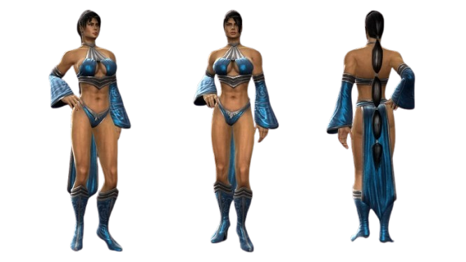
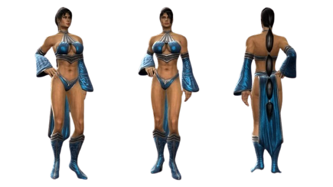

Kitana
A personagem Kitana faz parte do universo do jogo Mortal Kombat, sua primeira aparição foi em Mortal Kombat II, laçado em 1993. Kitana tem 10.000 anos, é um membro da realeza, sendo princesa do reino de Edenia, suas principais armas são os leques e facas.
Biografia
Inicialmente a personagem é descrita como filha do imperador do Outworld Shao Kahn, quando um dia descobre a verdade, seu pai foi morto por Shao Kahn, roubando o reino de Edenia. Kitana descobre a realidade sobre sua irmã, Mileena, um clone dela feito por Shao Kahn. No final do jogo Kitana mata Shan Kahn, com ajuda de Jade, sua melhor amiga, e Mileena, ela proteje outros reinos.
Luta
Por mais que Kitana lute com seus leques de aço e facas ela possuí um estilo de luta secundário que é a Garra de águia ou Eagle Claw, Tessenjutsu e o Ba Gua.
Garra de águia ou Eagle Claw
Tessenjutsu
Ba Gua
Traje da Kitana no Mortal Kombat 9
 

Maiores utilização da Kitana nos jogos: